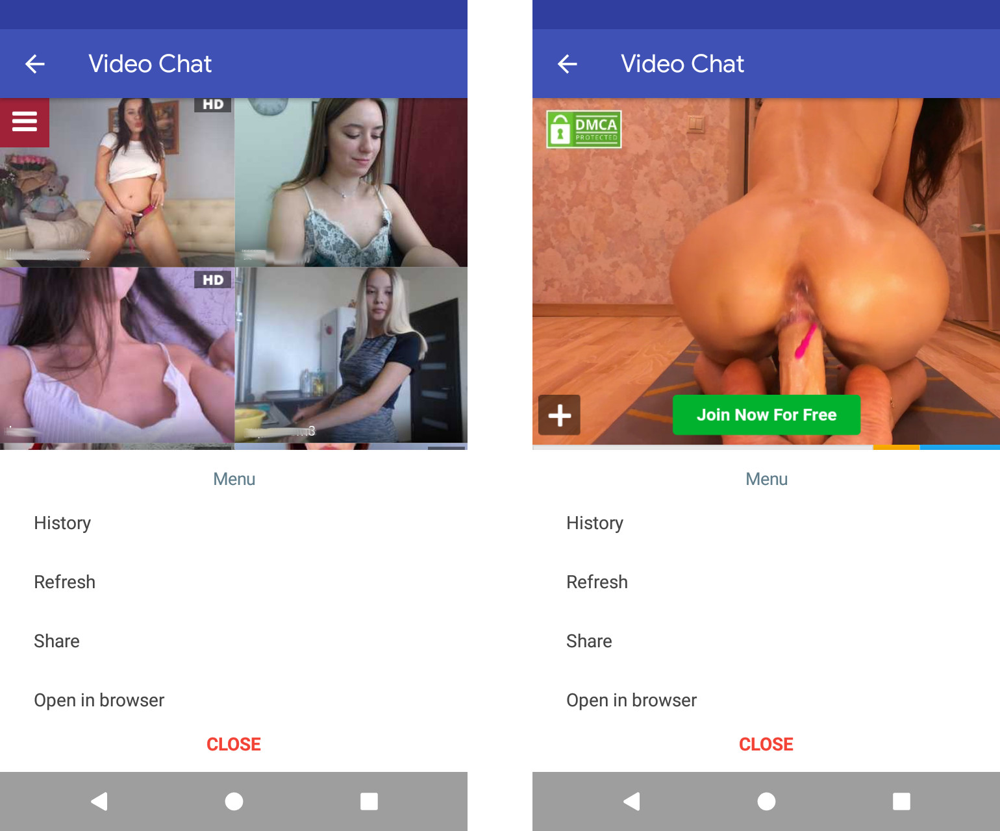

We have done a lot of work to make it more convenient for you to watch live webcam model broadcasts right on your Android device.
Story

In the new version of the application, we added the ability to view the history of the latest broadcasts that you previously visited. This feature will allow you to return to your favorite models in a few touches.
Share the broadcast with a friend
Now you can quickly share the broadcast with your friends on your social networks or instant messengers. In addition, you can share the entire list of models. Watch the broadcast together!
Improvements for users from some countries
Users from some regions faced problems that did not allow viewing model translations. We made changes so that you do not face similar problems.
These and other changes are already available to you in the new version of our application. Try it now, and we are already working on the next update!